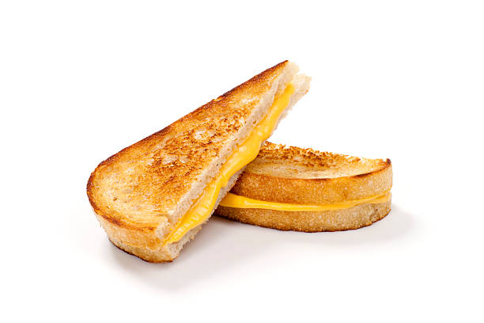

Grilled Cheese
Return home

Ingredients
- Bread (Any type of your choosing)
- Butter
- Any and as many types of Chesses you would like
Steps
1. Assemble sandwhich by taking 2 slices of bread and putting as much cheese as you would like between them.
2. Add butter to pan and heat up until and spalsh of water turns into beads of water gliding along the serface of the pan.
3. Gently place sandwhich into pan and let it sit for 10 seconds before flipping and then repeat every 10 seconds until chrispy golden brown.
4. Turn off flame and admire the work of art you just created!